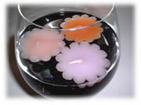
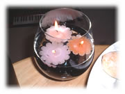

[前の日記]
[次の日記]
'*★
水に浮かべるキャンドル
★*'
..*..*..
2002年12月6日(金) くもり
..*..*..
水に浮かべるタイプのキャンドルは、夏の間、大活躍。
3日に1度くらい水をかえなくちゃならないから、ちょっと面倒なことは面倒なんだけど、涼しそうに見えるのでかかせません。このキャンドル、もう3年くらい、火をつけないで水に浮かべたかな？
でも、毎年色あせていくので、とうとう火をつけました。さよならー。

..*..*..*..*..*..*..*..*..*..*..*..*..*..*..*..*..*..*..*..*..*..